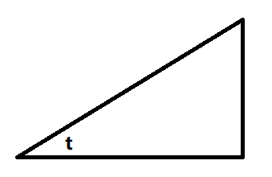

积分的计算框架
0
f(b)−f(a)=∫abf′(x)dx
1 积分表
1.1
(ln∣x∣)′=x1, ∫x1dx=(ln∣x∣)+C x=0
1.2
(tanx)′ = cos2x1⇒∫cos2xdx=tanx+C∫sin2xdx=∫sin2xcos2xcos2xdx=−∫tan2x−1dtanx=tanx−1+C
1.3
1.3.1
∫1+x2dx=arctanx+C⇒∫a2+x2dx=a2a∫1+(ax)2d(ax)=a1arctanax+C
1.3.2
∫1−x2dx=arcsinx+C⇒∫a2−x2dx=∫1−(ax)2dax=arcsinax+C
★1.4
1.4.1
∫x2±a2dx=ln∣x+x2±a2∣+C
1.4.2
∫cosxdx=t=cosx∫1−t2−1tdt=∫t2−1t21−1dt=∫(t1)2−1d(t1)=lnt1+t21−1+C=lncosx1+sinx+C
∫sinxdx=t=sinx∫t1−t2dt=−lnt1+t21−1+C=ln1+1−t2t+C=ln1+cosxsinx+C=lnsinx1−cosx+C
★1.5 Wallis
1.5.1
In=∫02πsinnxdx=∫02πcosnxdx=n!!(n−1)!!In%2,In%2={I0=2πI1=1n偶n奇
1.5.2
∫0πsinnxdx=∫02πsinnxdx+∫2ππsinnxdx∵∫2ππsinnxdxx=t+2π=t=x−2π∫02πsinn(t+2π)dt=∫02πcosnxdx∴∫0πsinnxdx=∫02πsinnxdx+∫02πcosnxdx=2In
∫0πcosnxdx=In+∫2ππcosnxdx∵∫2ππcosnxdxx=t+2π=t=x−2π∫02πcosn(t+2π)dt=∫02π(−sinx)ndx={∫02π(sinx)ndx∫02π−(sinx)ndxn偶n奇∴∫0πcosnxdx={2In0n偶n奇
1.5.3
∵2π是sinnx,cosnx的周期∴∫02πsinnxdx=∫02πcosnxdx
∫02πsinnxdx=∫0πsinnxdx+∫π2πsinnxdx∫π2πsinnxdxx=t+π=t=x−π∫0πsinn(t+π)dt=∫0π(−sinx)ndx⇒∫02πcosnxdx=∫02πsinnxdx={4In0n偶n奇
2 积分方法
2.1 凑微分
可以对函数复杂部分(尤其是复合函数)求导寻找需要凑的部分
∫x(1−x)arcsinxdx
∵(arcsinx)′=1−x12x1∴∫x(1−x)arcsinxdx=∫2(arcsinx)d(arcsinx)=arcsin2x+C
2.2 换元
2.2.1
可以直接令复杂项为未知数同时存在根式nax+b,max+b,令t=最小公倍数{n,m}ax+b
2.2.2 倒数
∫xx2−1dx=−∫x21−x21−dx=−∫1−(x1)2d(x1)=−arcsinx1+C
2.2.3 三角
p(x)先整理后三角代换:
1−x2={costsintx=sintx=cost
1+x2={cost1sint1x=tantx=tant1
x2−1={tant1tantx=sint1x=cost1
设x=三角函数(t),作出如下三角形,三角形某对边为x,1,剩下边由勾股定理可知,便于x回代∀三角函数(t)

∫1+x2f(x)dx既可以考虑darctanx也可以考虑x=tant,x2+1=cos2t1
例子
∫0+∞(1+x2)ndx=x=tant∫02π(cos2nt)d(tant)=I2n−2
2.3 分部
d(uv)=du⋅v+u⋅dv⇒∫udv=uv−∫vdu
推广
∫(可导)d(可积)=(可导)⋅(可积)−∫(可积)d(可导)=(可导)⋅(可积)−∫(可积)(导数)dx=(可导)⋅(可积)−∫(导数)d(积分)重复算法,直到(积分)为常数
u可导,v可积,规定导数的负数次方为原函数阶数
∫udv=uv−∫vdu∫vdu=∫u′dv(−1)=u′v(−1)−∫v(−1)du′∫v(−(n−1))du(n−1)=u(n)v(−n)−∫v(−n)du(n)∫udv=i=0∑n(−1)i⋅u(i)v(−i) +(−1)n+1∫v(−n)du(n)若u(n)是常数,则∫v(−n)du(n)=0⇒∫udv=i=0∑n(−1)i⋅u(i)v(−i) +C
| 导 |
u |
u’ |
… |
u(n) |
| 积 |
v |
∫v |
… |
v(−n) |
2.4 有理函数
分解(px2+qx+r)k,只看分母Qm(x)(ax+b)k=i=1∑k(ax+b)iAi,(px2+qx+r)k=i=1∑k(px2+qx+r)iAix+Bi上式求和通分,分子与Pn(x)比较系数,可以代特殊值
3 恒等变形
3.0
f−1(f(x))=x
3.1 三角恒等式
3.1.1
sin2x+cos2x=1
例子
∫sinxcos2x1dx=∫sinxcos2xsin2x+cos2xdx=∫cos2xsinx+sinx1dx
3.1.2
tan2x=cos2x1−1tan2x1=sin2x1−1
3.2 区间
3.2.1
∫abf(x)dxx=a+b−t=t=a+b−x∫baf(a+b−t)d(−t)=∫abf(a+b−x)dx
⇒∫02πf(sinx)dx=∫02πf(cosx)dx
3.2.2 对称函数
∵2∫abf(x)dx=∫abf(x)dx+∫abf(a+b−x)dx∴∫abf(x)dx=21(∫ab[f(x)+f(a+b−x)]dx)
3.3.3 对称轴
g(x)=f(x)+f(a+b−x)∵g(a+b−x)=g(x)∴g关于x=2a+b对称⇒∫abf(x)dx=21(2∫a2a+b[f(x)+f(a+b−x)]dx)=∫a2a+b[f(x)+f(a+b−x)]dx
3.3.4 原点对称
∫−aaf(x)dx=∫−aaf(−x)dx
∫−aaf(x)dx=∫−a0[f(x)+f(−x)]dx=∫0a[f(x)+f(−x)]dx
3.3 卷积
F(x)=∫0xtf(x−t)dt=∫0x−tf(−t+x)d(−t)=∫0x(−t+x−x)f(−t+x)d(−t+x)=u=−t+x∫x0(u−x)f(u)du=x∫0xf(u)du−∫0xuf(u)du
F′(x)=∫0xf(u)du,F′′(x)=f(x)